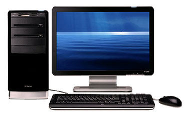

Настольные компьютеры Главный вид стационарного типа компьютеров – настольный, называемый также Desktop («Рабочий стол») или просто пк. Он размещается на специальном или письменном столе. К прямоугольному корпусу системного блока подключаются монитор, клавиатура, мышь, а также внешние устройства принтер и/или сканер (если они есть).
Компьютер
компьютер

Главное достоинство конфигурации настольных компьютеров – модульный принцип сборки. Он, во-первых, позволяет собрать устройство по заказу покупателя. Он может выбрать размер монитора, объём памяти и накопителя, быстродействие процессора и заплатить именно за такие характеристики компонентов, которые ему действительно нужны. Во-вторых, такие компьютеры в дальнейшем без труда можно будет модернизировать (например, добавив модуль памяти в свободный разъём или заменив микросхему процессора на более мощную) или отремонтировать.
Недостатки – немалые габариты.
Плюсы: Можно собрать настольный компьютер под себя.